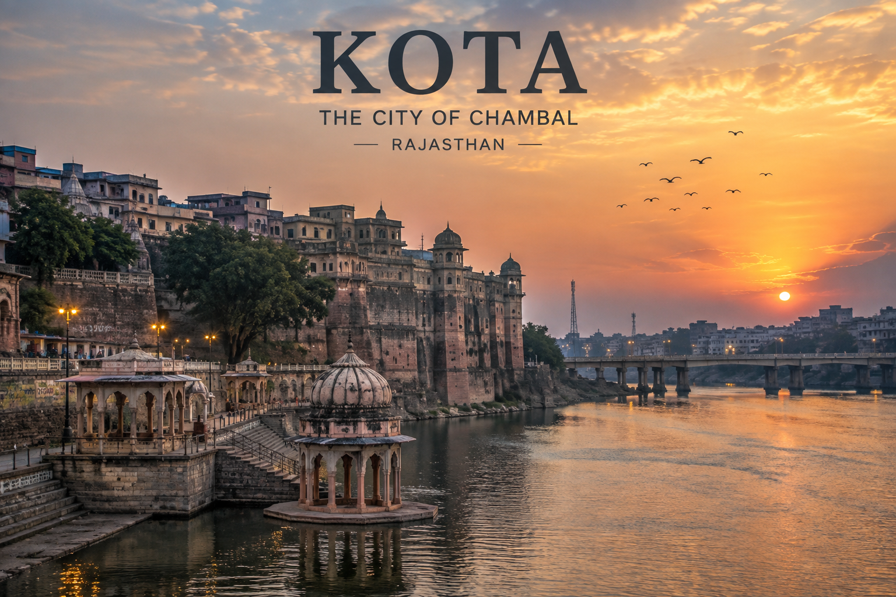
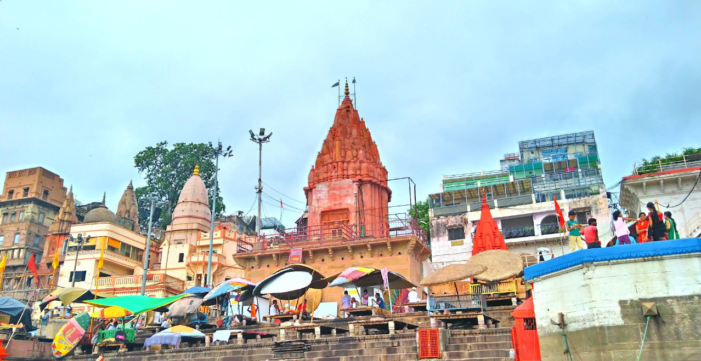
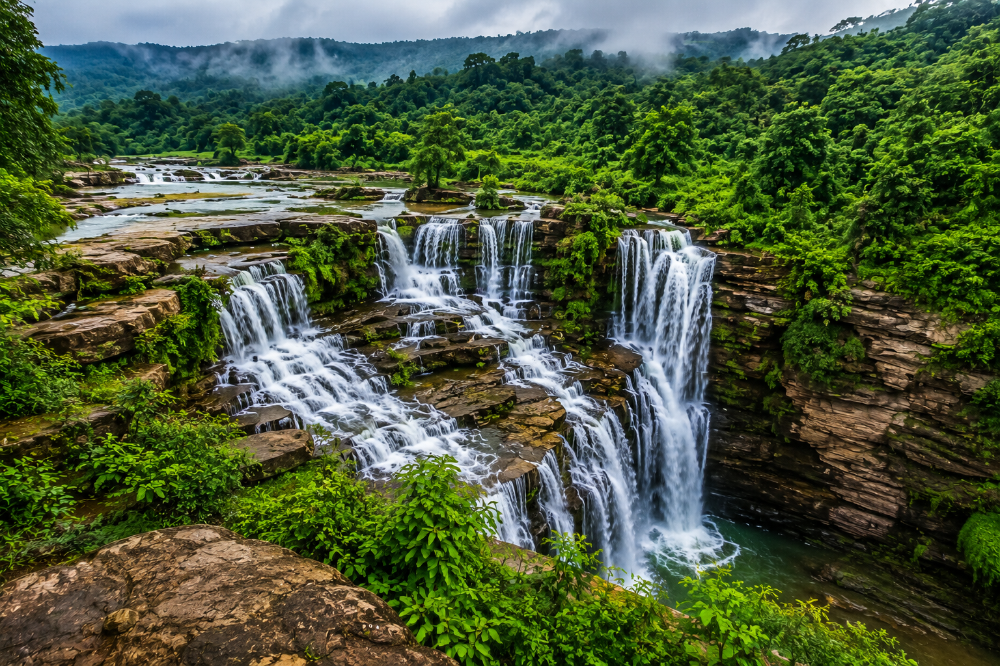

Every city tells a different story — through its streets, its people, its food and its soul. These are the places that left a mark on my heart, forever woven into my journey.

Kota is a very special place in my journey because I spent almost two years here while preparing for my JEE / Engineering entrance exams. I came here for coaching, but with time, Kota became more than just a place to study.
Kota is known as one of India's biggest coaching hubs. The city is filled with coaching institutes, students and young people working hard for their dreams. Living here gave me a chance to experience that unique student life and the atmosphere of a city built around education. 📚
Apart from studies, I also enjoyed exploring the city. Kota is quite developed and has many modern places to visit. One place I really liked was City Park. It is a beautifully designed artificial park, but its greenery, open spaces and peaceful atmosphere make it feel very close to nature. 🌿
After spending so much time here, Kota became a place full of memories for me — long study days, coaching life, evening walks, meeting new people and slowly becoming more independent. It will always remain an important part of my journey. ❤️
Spending two important years of my life in Kota — preparing for my future, experiencing student life, exploring the city and making memories along the way.

Varanasi is not just a city for me — it is home. ❤️ I am from Banaras, and maybe that's why this place feels a little more special to me than anywhere else.
Known as Kashi, it is one of the world's oldest living cities and is deeply connected with Bhagwan Shiv. From the peaceful ghats of the Ganga to the sound of temple bells, every corner of Banaras has its own story and its own feeling.
For me, Banaras is not something you simply visit. It is something you feel — in the Ganga, in the aarti, in the narrow streets, and in the peaceful atmosphere of Kashi. 🪔
Sitting beside the Ganga and watching the beautiful Ganga Aarti while the whole sky and river glow with golden light.
Prayagraj is a city where faith, history and nature come together. At the heart of the city lies the famous Triveni Sangam — the sacred meeting point of the Ganga, Yamuna and the believed-to-be-hidden Saraswati.
There is something peaceful about sitting beside the rivers, watching the boats slowly move across the water and seeing the sky change its colours. 🌅 It feels like everything becomes a little quieter for a while.
Prayagraj is also famous for the Kumbh Mela, one of the world's largest spiritual gatherings. But beyond the crowds and celebrations, the city has a simple charm — its rivers, old streets, peaceful ghats and beautiful sunsets.
Sitting near the Sangam at sunset, watching the golden light reflect on the water while boats slowly passed by — a moment that felt peaceful and unforgettable.
Lucknow, the City of Nawabs, is a place where history, food and beautiful architecture come together. I have visited Lucknow, and it was a really memorable experience exploring the city and seeing its famous places.
One of the most exciting places I visited was the Bhool Bhulaiya at Bara Imambara. Walking through its narrow passages and trying to find the way out was both confusing and fun! 😄
I also visited the famous Rumi Darwaza and Ghanta Ghar. The old buildings, huge gates and beautiful architecture made me feel like I was walking through a part of Lucknow's history.
Another fun part of my trip was visiting the Lucknow Zoo. It was a nice break from exploring old buildings and gave me a chance to relax and enjoy nature and animals. 🦁🌿
Exploring the Bhool Bhulaiya, seeing the grand Rumi Darwaza, visiting Ghanta Ghar and enjoying a fun day at Lucknow Zoo — every place gave me a different memory of the city.

Chandauli is a place I feel very close to. ❤️ Away from the busy city life, it is full of greenery, peaceful places, hills, forests and beautiful waterfalls. It is one of those places where you can simply relax and enjoy being close to nature.
My favourite time to explore Chandauli is during the rainy season. 🌧️ Everything becomes fresh and green, the waterfalls come alive, and the whole area looks beautiful and peaceful.
Places like Rajdari and Devdari Waterfalls are perfect examples of Chandauli's natural beauty. The sound of flowing water, green forests and fresh air make these places feel completely different from city life.
Chakiya and the nearby natural spots also have many beautiful places to explore. I really like the clean and open surroundings, peaceful environment and the simple beauty of nature here. 🌿
Visiting the waterfalls during the rainy season, surrounded by fresh green forests and the sound of flowing water — these are the moments that make Chandauli special to me.